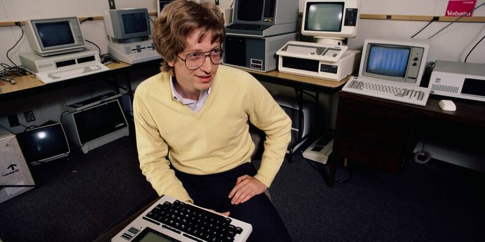

Jean Scratch
Développeur Front-end

A propos
JE SUIS PLUS PRÉCISÉMENT DESIGNER SENIOR ET ARTISAN NUMÉRIQUE. J’ACCOMPAGNE
LES PROFESSIONNELS DANS
LE DÉVELOPPEMENT DE LEUR IDENTITÉ, DE LEUR SITE WEB, POUR LA MISE EN VALEUR DE LEURS SAVOIR-FAIRE ET DE LEURS
CRÉATIONS. JE SUIS AUSSI
LE CO-FONDATEUR DE
TYPE8 STUDIO
Expert de l’image, je suis le garant de sa performance. Elle répond à des objectifs très concrets :
progression
du taux de conversion et accroissement de la notoriété. Mes clients évoluent principalement dans les secteurs de
l’événementiel, de la culture (musiciens, labels de musique, etc.), de la mode (stylisme) et de l’artisanat
d’art.
J’aime entretenir un rapport privilégié et direct avec eux, propice à l’écoute et à la confiance, l’inscrire sur
le
long terme.
Chaque professionnel fait l’objet d’une approche personnalisée. Ensemble, nous définissons les enjeux et les
besoins. Je réalise ensuite un audit des forces et faiblesses à partir duquel je définis une stratégie de
moyens.
Penser une expérience utilisateur innovante, qui s’inscrive dans une cohérence visuelle globale est une priorité
pour moi.
Le design que j’aime est minimaliste, efficace, sobre, délicat, avec une affection particulière pour la
typographie.
Il accompagne votre activité, votre changement d’image, tout en conservant votre identité. Je suis également
intervenant à
sup de pub et simplon dans divers domaines telle que la Direction Artistique digitale, l’UI – l’UX.
Je collabore avec d’autre expert dans leurs domaines: photographie (oram Dannreuther, kliché! studio)
développement
(Jeremy Fagis, Thomas Aufresne,
Maxime Bérard) illustration (Benoit Drigny),
pour proposer une expérience toujours plus qualitative.
expertises
art direction
digital design
brand identity
ui - ux design